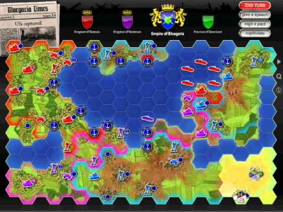
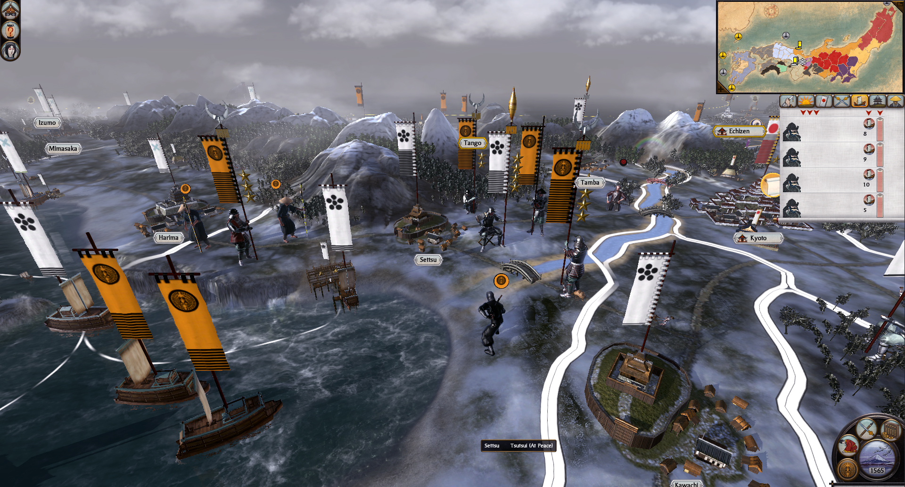
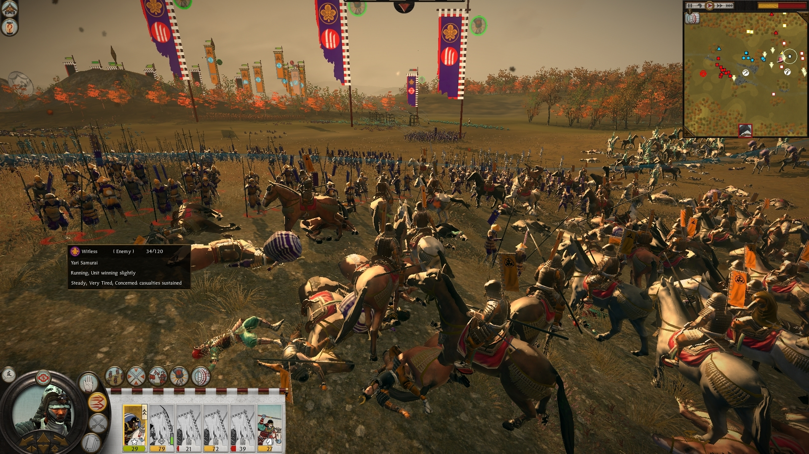
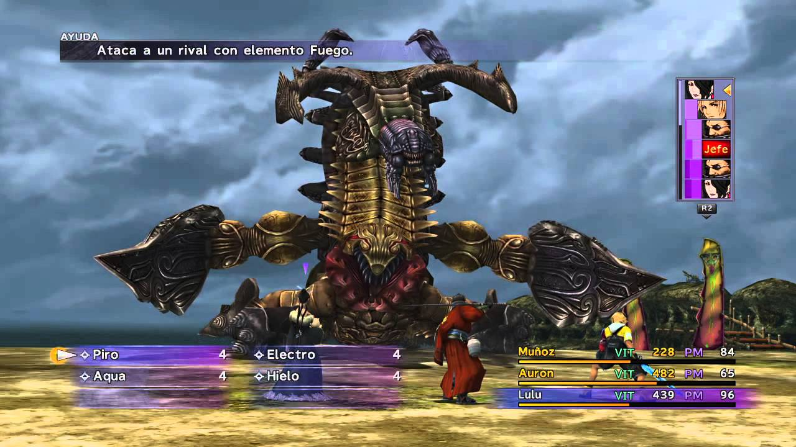
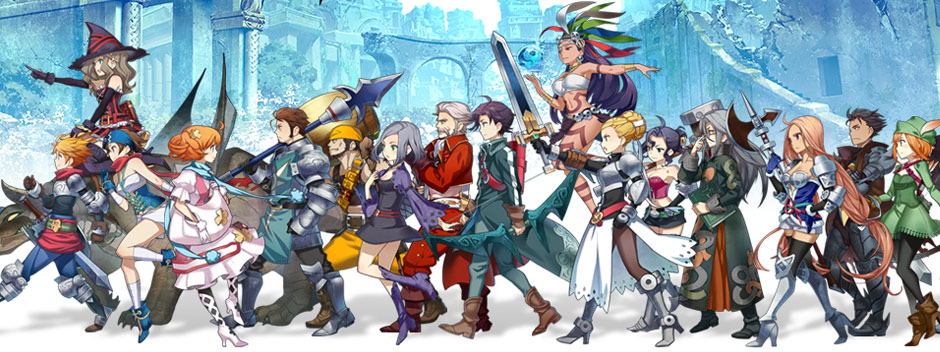
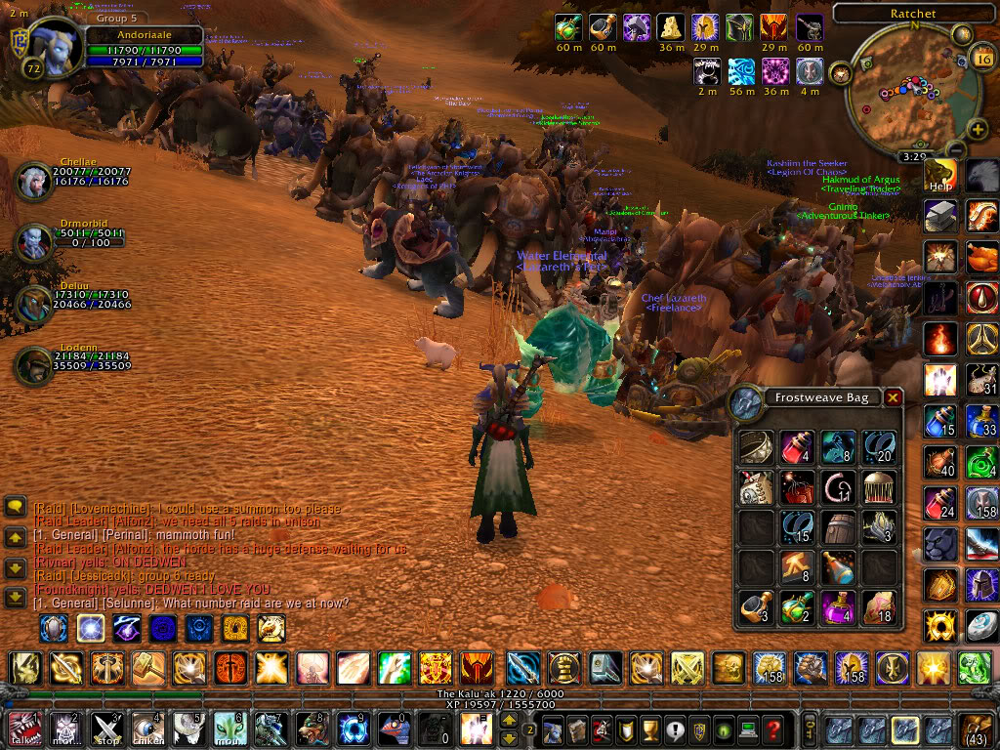
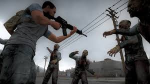
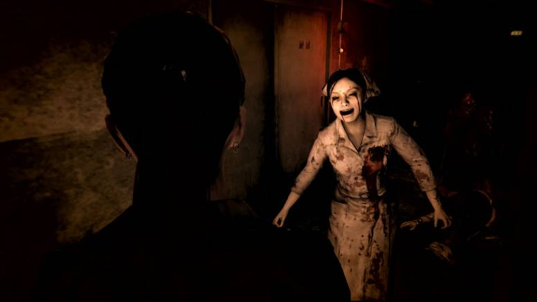

Los videojuegos de estrategia son videojuegos que requieren que el jugador ponga en práctica sus habilidades de planeamiento
y pensamiento para maniobrar, gestionando recursos de diverso tipo (materiales, humanos, militares...), conseguir la victoria.
En la mayoría de los videojuegos de estrategia, "al jugador se le concede una vista del mundo absoluta, controlando indirectamente
las unidades bajo su poder"

Los videojuegos que más me gustan del género de estrategia serían los de la saga de "Total War", estos son desarrollados por la
compañia "Creative Assembly"; suelen estar ambientados en europa, pero en distintas épocas de la historia. Estos mezclan los modos
de juegos por turnos y en tiempo real, ¿como?, os preguntareis, es muy sencillo, el juego consta de 2 escenarios, un mapa global el
cual funciona por turnos, y un escenario especifico de las batallas, los cuales se realizan en tiempo real.

De toda la cantidad de juegos que dispone esta saga de "Total War", mi favorito sin lugar a dudas se trata de Total War:Shogun 2,
este se ambienta en la época de Japón, justo antes de que los europeos lo descubrieran y empezasen a tener contacto con ellos, pero
tiene 1 DLC que permite al juego posicionarse en el momento en el que los europeos ya estan comerciando con ellos, y puedes utilizar
las primeras armas de fuego. Sin duda alguna, LO RECOMIENDO.
Rol
«Juego de rol» es la traducción usual en castellano del inglés role-playing game, literalmente: «juego de interpretación de papeles».
El videojuego de rol como género de videojuegos, incluye una amplia variedad de sistemas y estilos de juego. Algunos elementos fuertemente
asociados a los juegos de rol, como el desarrollo estadístico de personajes, han sido adaptados ampliamente a otros géneros de videojuegos.
Aunque usen la palabra «rol», no pueden ser considerados como juegos de rol en sí. La proliferación de este tipo de juegos en los últimos
años y el uso de la palabra «rol» para nombrarlos ha hecho que un gran número de personas crea (erróneamente) que los videojuegos de rol
son realmente juegos de rol en sí mismos.

Al igual que en el género anterior, este tipo de juegos puede ser por turnos o en tiempo real, pero la gran diferencia se basa en
la progresion que puedes hacer del personaje/s, esto no se basa únicamente en subir de nivel, si en asignarle unos puntos en unas
habilidades especificas y asi personalizar a tu personaje como a ti mas te guste, ademas de esto tambien suele haber un gran numero
de armas y armaduras que ayudan a potenciar esas habilidades y permitir a tu personaje hacerse increiblemente poderoso.

Desde mi infancia he jugado a muchos juegos de rol, pero sin lugar a dudas, el que me ha entretenido más tiempo, y el que más me incitava a
seguir jugando para mejorar mi personaje fue el WoW(World of Warcraft), este se le considera un MMORPG(Massive Multiplayer Role Play Game).
Este juego te permite jugar de forma cooperativa, competitiva y cooperativa-competitivamente; ¿a que me refiero con esto?, en todas
las formas de juegos debes jugar de forma cooperativa con algun o algunos otros jugadores, excepto en las arenas 1v1, con los cuales
tendras que usar tu imaginacion e ingenio para enfrentarte tanto a jefes super poderosos controlados por la IA(Inteligencia Artificial),
en mazmorras de muy variadas dificultades, o enfrentarte contra otros jugadores en campos de batalla. De cualquiera de las formas,
lo mas importante aumentar el nivel de tu personaje al máximo, pero no se basa solo en eso, tienes que elegir el rol que desempeñara tu
personaje para ayudar al resto de tus compañeros, puede ser tanque, es un rama con mucha defensa pero poco daño; sanador, que como su
nombre indica se ocupa de cuidar que sus compañeros no mueran durante la batalla; y por ultimo DPS(Daño por segundo), que se basa en
hacer muchisimo daño, pero deja su defensa muy desprotegida.
El resto lo dejo en secreto para que lo descubrais si quereis jugar.

Supervivencia
Los videojuegos de supervivencia se basan en eso, sobrevivir, en estos juegos no suele haber niveles ni progresion del personaje,
tienes que conseguir primero que todo una fuente de agua y alimentos, por que en estos juegos te puedes morir de hambre y sed, y en
algunos incluso tu personaje/s necesita dormir, estos juegos suelen estar ambientados en algun desastre global, del cual no puedes escapar,
pueden ser una apocalipsis zombie, una ola de radioactividad, o simplemente no tienen ninguna explicacion logica. Además, algunos de
estos juegos son on-line, lo que quiere decir que tendras que proteger tus recursos del resto de los jugadores, por que generalmente
te los pueden robar, este aspecto es el que genera cierta adiccion, y que estes todo el rato pensando en si alguien te habra robado lo
que tienes.

Actualmente hay un monton de juegos de este género en desarrollo con acceso anticipado, pero todos parecen muy prometedores, dejaré
que vosotros mismos investigueis sobre este género si estais interesados, pero yo os voy a recomendar el que más me gusta a mi.
El juego del que os hablo se llama Rust(oxidado), este juego te da bastante "libertad" en comparacion con otros juegos del mismo estilo,
esto es por el sistema de construccion tan sencillo y a la vez complicado que tiene, puedes construir desde bases muy pequeñas a bases
super complejas, ¿y por que iba ha hacer una base compleja?, por un motivo muy sencillo, en este juego, cuando te desconectas tu personaje
NO desaparece como en la mayoria de videojuegos, si no que se queda dormido en el suelo, ¿que significa esto?, que cualquier otro jugador
puede matarte mientras duermes, pero no es solo eso, en este juego puedes fabricar misiles y cargas explosivas para destruir las bases de
los demas y asi robarles o bien los objetos, o directamente la base entera; ademas se centra mucho en las armas de fuego, lo que hace que
tengas mucha tension cuando llevas muchos materiales encima y tienes que volver a casa. Ademas cuenta con un gran fichaje entre sus
componentes, y se trata de uno de los diseñadores de las armas de los primeros Counter Strike, ademas su apartado grafico y sonoro es excelente.
Terror
Este género de videojuegos se basa en crear tensión y miedo al usuario, mediante las luces, los sonidos y las imagenes. Pueden darte
sustos progresivos con gritos o pantallazos, o bien pueden mantenerte en tension constante con un sonido de suspense y por ejemplo siendo
constantemente perseguido por el escenario hasta que consigas el objetivo del juego.

No soy muy fan de este género de videojuegos, pero me parecía importante añadirlo, por que crean una tensión muy realista y merece la
pena si te gustan las emociones fuertes. En mi caso el juego que mas me gusta de este género es un juego que estan en desarrollo
anticipado ahora mismo llamado Dead by Daylight, es un juego totalmente multijugador, con algun toque de rol, por que los personajes
tienen unas habilidades que vas desbloqueando conforme vas ganando puntos en las partidas. Para mi lo mejor de este juego es la tension
que tienes cuando el asesino viene a por ti, tambien puedes jugar como el asesino, pero logicamente jugando como asesino pierde el
factor de terror; pero siendo superviviente, en un mapa cerrado y con otros 3 supervivientes en la partida, teneis que reparar 5 motores
para poder abrir una de las 2 puertas y escapar del escenario, lo que mas impresiona de este juego es que cuando el asesino esta cerca
empieza a sonar el latido del corazon, cada vez mas fuerte conforme el asesino se acerca, lo que hace que te pongas muy nervioso y a
veces haciendo que tu mismo te acerques al asesino sin saberlo.
Mi top de los mejores
Al fin llegamos, al momento mas esperado por todos... o bueno... AL MOMENTO MAS ESPERADO POR ALGUNOS...
MI TOP DE LOS MEJORES
VIDEOJUEGOS
Vayamos directamente al grano, voy a empezar por un clasico... un juego al que han jugado y aun juegan millones de personas
conocido por todos los frikis...
1. World of Warcraft:
Ya lo he mencionado anteriormente en la seccion de juegos de rol, pero queria darle un apartado mas
importante aqui; realmente es un juegazo, pondria la mano en el fuego diciendo que es el juego con el mapa MÁS grande de todos,
es cierto que los enemigos que te encuentras por el mundo tampoco suponen un gran reto, por lo menos ahora, en el momento de su
lanzamiento los enemigos eran mas poderosos y costaba mucho más subir de nivel, pero eso no le quita su encanto, por que en las
mazmorras podrás encontrar con todos los enemigos poderosos que puedas desear, asique no desesperes. Como es normal de un videojuego
del año 2004, los gráficos no son ninguna maravilla ahora, pero en su momento eran bastante impresionantes para lo amplio que era el
juego y toda la cantidad de contenido que tiene, el sistema de los atributos de los personajes puede parecer algo simple, pero en su
parte oculta guarda un secreto muy bien escondido, hay atributos, como por ejemplo el intelecto, que te aumenta la cantidad de mana
(poder mágico necesario para usar habilidades) y tambien aumenta el daño mágico un poquito, pero lo que no todo el mundo sabe, y que
no pone en el juego, es que tambien te aumenta un pequeño porcentaje de regeneracion de mana, parece una tonteria, pero todos los
atributos tienen algo oculto, he mencionado el mas tribial de todos, pero si conoces bien estos "secretos", puedes hacer que tu
personaje, con peor equipación que otro jugador de la misma clase, sea mucho más eficiente, ademas por supuesto de las combinaciones
de habilidades que utilices, pero un pequeño encantamiento en alguna pieza de tu armadura puede marcar de forma sorprendete la
diferencia con el resto de jugadores. Es un juego tan tan amplio que necesitaría una página dedicada exclusivamente a este juego,
además me parece que lo interesante de los videojuegos es descubrir estos "detallitos" mientras se juega.
Ahora seguimos con un juego que todavía se encuentra en desarrollo, es un juego que ya he mencionado en uno de los apartados de arriba,
a pesar de estar en desarrollo parece que va a conseguir llegar a un punto muy bueno dentro de poco tiempo, estoy hablando de...
2. Rust:
Un juego que desde mi punto de vista tiene mucho futuro, al contrario que el WoW, mencionado anteriormente, este juego
no reluce preciosamente por su contenido, ni por la dificultad de la IA, ni por tener un complejo sistema de atributos, de hecho, en ese
aspecto es muy simple; es un juego de supervivencia, en el que la "unica" dificultad se encuentra en el resto de los jugadores que se
encuentran en el mismo servidor, hay animales, pero solo 2 que atacan, osos y lobos, los primeros si pueden resultar un reto para los
jugadores que han empezado hace poco, pero los lobos con una herramienta basica como es el hacha de piedra, puedes matarlos, luego puede
que mueras por el sangrado, pero siempre puedes detenerlo con un vendaje. El encanto que tiene es su simplicidad, lo unico que tienes
que hacer es conseguir recursos, para hacer más segura tu base, y fabricar armas mas potentes para poder enfrentarte a otros jugadores,
básicamente tienes 2 caminos que puedes recorrer, "agresivo o pasivo"; siendo agresivo iras buscando otros jugadores para matarlos y
robarles todo lo que lleven encima, siendo pasivo, recolectas materiales y los lleva a tu base para acumularlos; de cualquiera de las
2 maneras el objetivo final es el mismo, robar y matar a tus vecinos para estar tranquilo en tu zona. Por supuesto puedes hacer lo que
quieras, puedes intentar crear una comunidad de jugadores pacificos que intenten mantener la paz en el servidor.
Bueno ahora pasamos al genero de la estrategia, y para mi este es el mejor de todos, si habeis leido lo que he puesto anteriormente
ya os imaginareis de cual os voy ha hablar, se trata de...
3. Total War: Shogun 2:
Para mi el mejor juego de estrategia de todos, empiezas con 1 o 2 castillos, y tienes que ir reclutando
tropas y mejorando tus castillos para hacerlos mas seguros y para poder pagar el mantenimiento de tus tropas, ademas de para poder
entrenar y reclutar tropas mucho mas fuertes y mejor armadas, tambien con mas experiencia; el juego ademas de esto consta de un sistema
de diplomacia, con la cual puedes negociar con otras facciones, bien para intercambiar vuestros productos y ganar dinero, bien para
firmar pactos de no agresion, alianzas, accesos militares, etc. Lo bueno de este juego es que puedes jugar solo o en multijugador,
si juegas en el mapa de campaña en multijugador cada jugador empieza con una faccion distinta, y podeis aliaros o enfrentaros, o ambas
cosas, tambien puedes realizar batallas personalizadas, en las cuales los jugadores tiene un numero limitado de dinero y con ese dinero
elegir las tropas que van a utilizar. El sistema de batallas es muy intenso, tus tropas se dividen en unidades, las cuales salen
marcadas con unas banderas para que sea mas facil identificarlas, puedes mover a las unidades y posicionarlas como tu quieras, puedes
esconder algunas unidades en bosques por ejemplo; pero tambien hay distintos tipos de unidades, hay solados con lanza, con espada,
caballeria, tropas con arco, hay ninjas, cañones, mosqueteros... hay mucha variedad, y todas pueden ser utiles, hasta la mas debil de
todas puede marcar la diferencia en la batalla si usas una buena estrategia. Hay batallas terrestres y maritimas, y dentro de las
terretres hay batallas a campo abierto y batallas en fortalezas. Ademas, el juego cuenta con una rama de tecnologias, las cuales te
permiten construir nuevos edificios, aumentar tus relaciones diplomaticas, aumentar tus ingresos, aumentar la felicidad de la poblacion,
etc.
Ahora os voy ha hablar de un clásico que salió únicamente para la PlayStation 2, otro juego que salio en el año 2004, y con una
saga muy amplia... ¿ya sabes de cual hablo? lo mismo te estas equivocando hablo de...
4. Dragon Quest VIII: El Periplo del rey maldito:
Se que hay muchos juegos parecidos que puede que sean mejores, pero este
me encanta por su apartado grafico, me parece muy caricaturesco ademas de divertido, y tambien me gusta por las misiones, objetos y
enemigos que se encuentran escondidos por el mapa, es un juego para jugarlo tranquilo, de vez en cuando, y con mucha mucha calma ir
mirando toda las esquinas del mapa, no voy a contaros mucho mas sobre el juego, por que me parece que es de ese tipo de juegos que
si te los cuentan pierden la gracia, pero es muy divertido jugarlo.